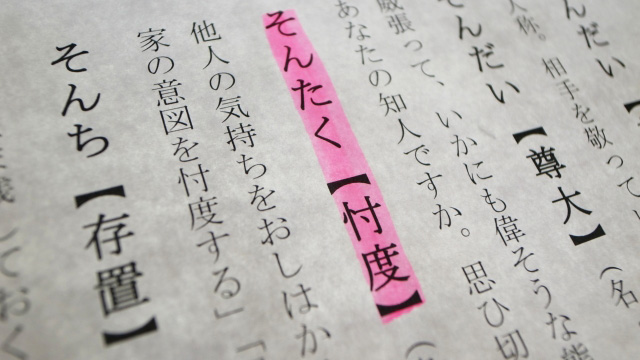

いつの頃からか学校の先生たちと話していて気づいたことがあります。
それは校長先生は元気で気さく。教頭先生はその反対ということです。
あくまで個人的印象ですが他にも同じ感想をもつ人がけっこういるので、あながち的はずれではないと思っています。
この印象は小学校から中学校、高校とどこへ行っても変わりません。
校長→元気！
教頭→やや陰鬱(笑)
校長はだいたいどこの学校でも、気さくで開放的に話してくれます。自分の考えや方針などザックバランに語り、あまり隠しごとなどしない雰囲気。なのでたいていは非常に個性的な印象を与えます。
人となりがクッキリした印象。
それに引きかえ教頭はあまり自分を押し出さず、自分の考えも周囲に配慮して明確にしないのが特徴。中には自分を押し殺してひたすら何かに耐えている修行僧のような人もいます。だから没個性というかあえて個性を閉じこめている感じ。
それらが相まって何かしら陰鬱な雰囲気をかもし出しているのでしょう。
この印象は何十年も前からなので決してたまたまの性格的なものではないことは確かです。もちろん百パーセント絶対ではありませんがこの「現象」は校長と教頭という職務上の相違から来ているのは間違いないようです。
つまり校長は組織（学校）のトップなので、他人の顔色をうかがう必要はなく、学校経営という限られた領域であれ最高権力をふるうことができるのに対し、教頭はそのような「自由」をもっていないということです。
教頭は実は大変なのです。対内的にも対外的にも実質は仕事の大部分の責任を負わされ、うまくいって当り前。うまくいかなければ責任問題となる。
校長の方針に従う一方で教師集団をまとめ、生徒指導や保護者対応も実質的に取りしきらなければならず、まさにアチラ立てればコチラ立たずの状況におちいりやすい。
いつも教頭先生が自分の考えを明確にせず、心の内を押し殺しているかに見えるのもこういう事情があるからと推察できます。
自分らしさを出せない人
要するに教頭とは失敗を怖れる人なのです。
自分の主張などよりも、無難に職務を遂行することが大事でありそして校長の「評価」をいつも気にしているのです。
自分が仕える校長の評価によって将来自らが校長になれるかどうかが決まると思っているからでしょう。
こう書いてくると、この話は学校にとどまるものではないことが分かります。
恐らく日本の組織―会社や役所に限らず地域のコミュニティ、政治や派閥など―集団全体に及ぶのではないかと思います。
集団のトップはある程度自由にふるまうことが許され結果として個性を出すことができるが、下位の者（あくまで集団内の序列の上で）は常に上位者の顔色をうかがい自らの考えを明快に述べることなく「自分らしさ」を表に出せない。結果として「理不尽」を感じながらも耐えるしかないとガマンを自らに強いてしまう。
トップとナンバー2の関係にとどまらず、上司と部下、先輩と後輩、集団内のボスと取り巻きグループの間でこのような光景がくり広げられているのではないでしょうか。
「仕方ないではないか。組織や集団の中にいる以上、人は好き勝手に生きていくことはできない」
「上司や実力者に逆らうとそこではやっていけないのでは･･･」
多くの人はこのような「怖れ」を抱いていると思います。そしてますます自分を押し殺して生きているわけです。
失敗を怖れない人こそ評価される
さて、ここから私の考えですがこれら「上の人の顔色をうかがって（怖れて）自分を押し殺す」のが良いというのは実は大きな損だということです。
個々の例をひとまず置いて、組織とか集団というものを少し離れた視点からながめて見ると、各々の組織（集団）には「健全化へ向かう力」があるからです。それがないとすぐに崩壊してしまうからです。
ある程度の規模になると組織は生き延びるためにどうすべきかを自然と探るようになるのです。
具体的にいうと、社長なり校長なりトップは会社や学校全体のことを第１に考える。例外はあるにしても通常は自分の組織の発展を考えるものです。当然全体の発展には個々の成員の頑張りが必要だと分かる。
つまり誰が「良くやって」くれていて、誰が「ダメなのか」を常に判定しているのです。
で、ここが大事なのですが多くの人は「失敗したら評価が下がる」と考えますがトップの見方は別なのです。失敗を怖れる人はつい消極的に物事を進めがちですが、評価されるのは積極的にチャレンジしたほうなのです。
「失敗」や「評価されること」を怖れて行動しない者より、失敗してもあるいは他者と摩擦を起こしても積極的に行動する人のほうが評価されるということです。この傾向は最近ますます増える傾向にあります。
「上」の顔色をうかがい「そんたく」ばかりして本音を押し殺すタイプは組織にとって最悪なのです。
ひと昔前の大企業や役所、学校などは「事なかれ主義」が一般的で、それまで同じようなやり方を踏襲する保守的な組織だったと思います。しかし、今はそのような組織も急激な変化を見せています。
トップのあり方自体がどこも変わってきています。開明的で斬新な発想の人が大勢なのです。
「出る杭は打たれる」「長いモノには巻かれろ」という古い考え方は急速に意味を消失しつつある。
だから「教頭的あり方」は組織全体からしても個人的野心（出世）という観点からも損であり有益ではないと言えます。
これからはもっと「自分らしさ」を出すことが大切になりますが、それについてはまた次回に話したいと思います。